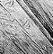

In this longer chapter the model world of an Inform game will be
explored and examples will gradually complete the ‘Ruins’
begun in Chapter II. So far, ‘Ruins’ contains just a
location of rainforest together with some rules about photography.
The immediate need is for a more substantial map, beginning with a
sunken chamber. Like the Forest, this too has light, however dim. If
it didn't, the player would never see it: in Inform's world darkness
prevails unless the designer provides some kind of lamp or, as in this
case, ambient light.
Object Square_Chamber "Square Chamber"
with name 'lintelled' 'lintel' 'lintels' 'east' 'south' 'doorways',
description
"A sunken, gloomy stone chamber, ten yards across. A shaft
of sunlight cuts in from the steps above, giving the
chamber a diffuse light, but in the shadows low lintelled
doorways to east and south lead into the deeper darkness
of the Temple.",
has light;
This room has a name property even
though rooms are not usually referred to by players. The nouns given
are words which Inform knows “you don't need to refer to”,
and it's a convention of the genre that the designer should signpost
the game in this way. For the game to talk about something and later
deny all knowledge – “I can't see any such thing”
– is not merely rude but harmful to the player's illusion of
holding a conversation about a real world. Better to parry with:
>examine lintel
That's not something you need to refer to in the course of this game.
· · · · ·
Not all of the Square Chamber's décor is so irrelevant:
Object -> "carved inscriptions"
with name 'carved' 'inscriptions' 'carvings' 'marks' 'markings'
'symbols' 'moving' 'scuttling' 'crowd' 'of',
initial
"Carved inscriptions crowd the walls, floor and ceiling.",
description
"Each time you look at the carvings closely, they seem
to be still. But you have the uneasy feeling when you
look away that they're scuttling, moving about. Two
glyphs are prominent: Arrow and Circle.",
has static pluralname;
The static attribute means that the inscriptions
can't be taken or moved. As we went out of our way to describe a shaft
of sunlight, we'll include that as well:
Object -> sunlight "shaft of sunlight"
with name 'shaft' 'of' 'sunlight' 'sun' 'light' 'beam' 'sunbeam'
'ray' 'rays' 'sun^s' 'sunlit' 'air' 'motes' 'dust',
description
"Motes of dust glimmer in the shaft of sunlit air, so
that it seems almost solid.",
has scenery;
The ^ symbol in "sun^s"
means an apostrophe, so the word is “sun's”. This
object has been given the constant name sunlight because
other parts of the ‘Ruins’ source code will need to refer
to it later on. Being scenery means that the object is
not only static but also not described by the game unless actually
examined by the player. A perfectionist might add a before
rule:
before [;
Examine, Search: ;
default: "It's only an insubstantial shaft of sunlight.";
],
so that the player can look at or through the sunlight,
but any other request involving them will be turned down. Note that
a default rule, if given, means “any action except
those already mentioned”.
▲
Objects having scenery are assumed to be mentioned in
the description text of the room, just as the “shaft of sunlight”
is mentioned in that of the Square Chamber. Giving an object concealed
marks it as something which is present to a player who knows about it,
but hidden from the casual eye. It will not be cited in lists of objects
present in the room, and “take all” will not take it, but
“take secret dossier”, or whatever, will work. (Designers
seldom need concealed, but the library uses it all the
time, because the player-object is concealed.)
· · · · ·
Some scenery must spread across several rooms. The ‘Ruins’, for instance, are misty, and although we could design them with a different “mist” object in every misty location, this would become tiresome. In ‘Advent’, for instance, a stream runs through seven locations, while mist which (we are told) is “frequently a sign of a deep pit leading down to water” can be found in ten different caves. Here is a better solution:
Object low_mist "low mist"
with name 'low' 'swirling' 'mist',
description "The mist has an aroma reminiscent of tortilla.",
found_in Square_Chamber Forest,
before [;
Examine, Search: ;
Smell: <<Examine self>>;
default: "The mist is too insubstantial.";
],
has scenery;
The found_in property gives a list
of places in which the mist is found: so far, just the Square Chamber
and the Forest.
▲ This allows for up to 32 misty locations. If scenery has to be visible even more widely than that, or if it has to change with circumstances (for instance, if the mist drifts) then it is simpler to give a routine instead of a list. This can look at the current location and say whether or not the object should be present, as in the following example from a game taking place at night:
Object Procyon "Procyon",
with name 'procyon' 'alpha' 'canis' 'minoris' 'star',
description "A double-star eleven light years distant.",
found_in [;
return (location ofclass OutsideRoom);
],
has scenery;
found_in is only consulted when the player's
location changes, and works by moving objects around to give the illusion
that they are in several places at once: thus, if the player walks from
a dark field to a hilltop, Procyon will be moved ahead to the hilltop
just in advance of the player's move. This illusion is good enough for
most practical purposes, but sometimes needs a little extra work to maintain,
for instance if the sky must suddenly cloud over, concealing the stars.
Since it often happens that an object must be removed from all the
places in which it would otherwise appear, an attribute called
absent is provided which overrides found_in
and declares that the object is found nowhere. Whatever change is made
to found_in, or in giving or removing absent,
the Inform library needs also to be notified that changes have taken
place. For instance, if you need to occult Procyon behind the moon
for a while, then:
give Procyon absent; MoveFloatingObjects();
The library routine MoveFloatingObjects
keeps the books straight after a change of state of found_in
or absent.
· · · · ·
Whereas Procyon is entirely visual, some scenery
items may afflict the other four senses. In ‘Ruins’,
the Forest contains the rule:
before [;
Listen: "Howler monkeys, bats, parrots, macaw.";
],
Besides which, we have already said that the mist
smells of tortilla, which means that if the player types “smell”
in a place where the mist is, there should clearly be some reaction.
For this, a react_before rule attached to the mist is
ideal:
react_before [;
Smell: if (noun == nothing) <<Smell self>>;
],
This is called a “react” rule because
the mist is reacting to the fact that a Smell action is
taking place nearby. noun is compared with nothing
to see if the player has indeed just typed “smell” and
not, say, “smell crocus”. Thus, when the action
Smell takes place near the mist, it is converted into
Smell low_mist, whereas the action Smell
crocus would be left alone.
The five senses all have actions in Inform:
Look, Listen, Smell,
Taste and Touch. Of these, Look
never has a noun attached (because Examine,
LookUnder and Search are provided for
close-up views), Smell and Listen may or
may not have while Taste and Touch always
have.
•
EXERCISE 6
(Cf. ‘Spellbreaker’.) Make an orange cloud descend on
the player, which can't be seen through or walked out of.
· · · · ·
Rooms also react to actions that might occur in them
and have their own before and after rules.
Here's one for the Square Chamber:
before [;
Insert:
if (noun == eggsac && second == sunlight) {
remove eggsac; move stone_key to self;
"You drop the eggsac into the glare of the shaft of
sunlight. It bubbles obscenely, distends and then
bursts into a hundred tiny insects which run in all
directions into the darkness. Only spatters of slime
and a curious yellow-stone key remain on the chamber
floor.";
}
],
(The variables noun and second
hold the first and second nouns supplied with an action.) As it happens
this rule could as easily have been part of the definition of the eggsac
or the sunlight, but before and after rules
for rooms are invaluable to code up geographical oddities.
•
EXERCISE 7
Create a room for ‘Ruins’ called the Wormcast, which has
the oddity that anything dropped there ends up back in the Square Chamber.
▲
Sometimes the room may be a different one after the action has taken
place. The Go action, for instance, is offered to the
before routine of the room which is being left, and
the after routine of the room being arrived in. For example:
after [;
Go: if (noun == w_obj)
print "You feel an overwhelming sense of relief.^";
],
will print the message when its room is entered from
the “west" direction. Note that this routine returns false,
in the absence of any code telling it to do otherwise, which means
that the usual game rules resume after the printing of the message.
•
REFERENCES
‘A Scenic View’ by Richard Barnett demonstrates a system
for providing examinable scenery much more concisely (without defining
so many objects).
•found_in
can allow a single object to represent many different but similar objects
across a game, and a good example is found in Martin Braun's "elevator.inf"
example game, where every floor of a building has an up-arrow and a
down-arrow button to summon an elevator.